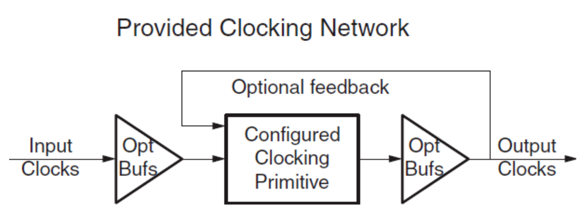
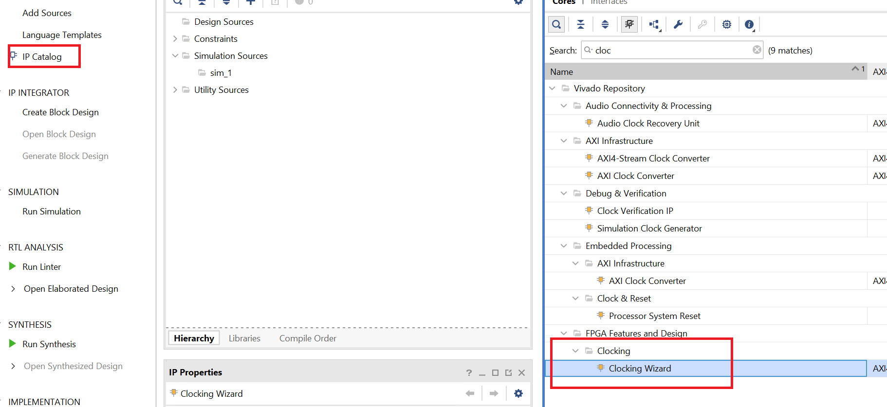
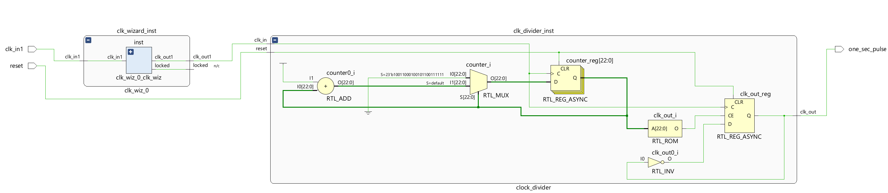
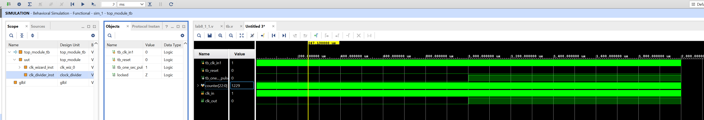
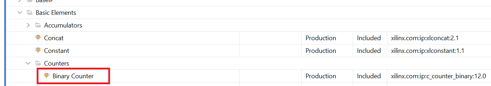
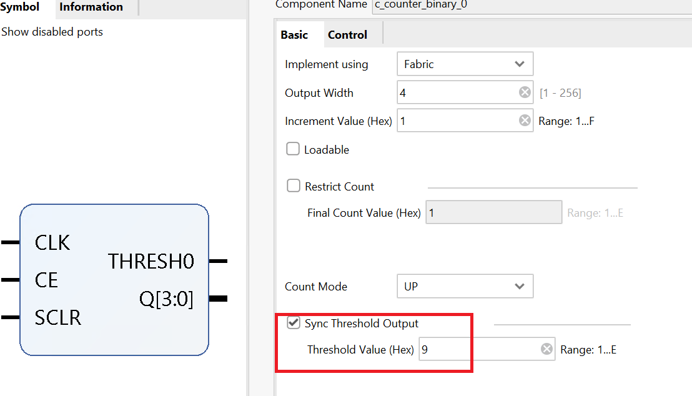
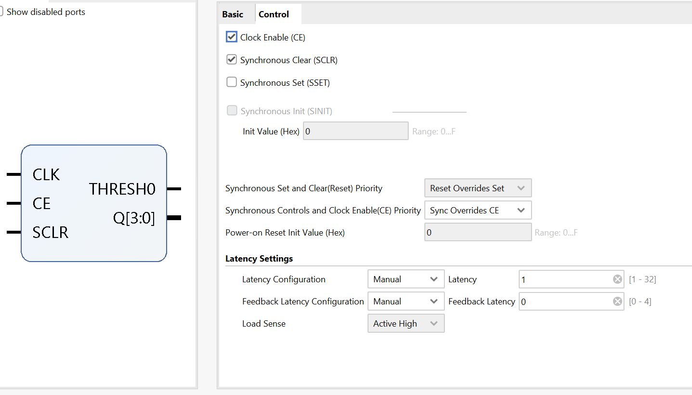
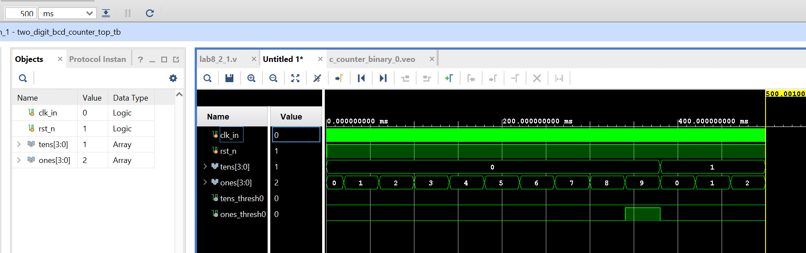

Lab8_Architectural Wizard and IP Catalog
Introduction
Today’s Xilinx FPGAs contain many more resources than basic LUT, CLB, IOB, and routing. The FPGAs are now being used to implement much more complex digital circuits than glue logic when they were invented. Some complex architectural resources, such as clocking, must be configured and instantiated instead of inferred. There are also commonly used complex circuits, such as the ReedSolomon decoder, provided by tools so that a designer does not have to “reinvent the wheel.” This lab introduces the Architectural Wizard and the IP generator tools available through the IP Catalog
Architectural Wizard
Some specialized and advanced architectural resources can efficiently be utilized when configured and instantiated properly instead of inferring them. The number and types of such resources vary depending on the FPGA family being used. In the Artix-7 family, clocking, SelectIO, soft error mitigation, and XADC resources are supported by the architectural wizard. These resources are accessed under the FPGA Features and Design folder of the IP Catalog tool.
The wizard makes it easy to create HDL source code wrappers for clock circuits customized to your clocking requirements. The wizard guides you in setting the appropriate attributes for your clocking primitive, and also allows you to override any wizard-calculated parameter. In addition to providing an HDL wrapper for implementing the desired clocking circuit, the Clocking Wizard also delivers a timing parameter summary generated by the Xilinx timing tools for the circuit. The main features of the wizard include:
• Accepts up to two input clocks and up to seven output clocks per clock network
• Automatically chooses the correct clocking primitive for a selected device
• Automatically configures clocking primitive based on user-selected clocking features
• Automatically implements overall configuration that supports phase shift and duty cycle requirements
• Optionally buffers clock signals
The functionality of the generated core can be viewed as:

Suppose we want to generate a 5MHz clock in phase with a 100 MHz input clock. Follow the steps below to achieve that:
Double-click on the Clocking Wizard entry. When the wizard opens, you will notice that there are five tabs.

The first tab, Clocking Options, has parameters related to the input clock and clocking features, the input frequency value and the range. Since the clock source is 100 MHz, we will keep the value to default.
The second tab, Output Clocks, has parameters related to the output clocks and desired frequencies. Change the Requested Output Frequency to 1.000 MHz and notice that it shows the frequency in red, indicating something is wrong. Move the mouse over the same, and you will see a popup indicating that the actual frequency range for this device is 4.687 MHz to 800 MHz. Change it to 5.000 MHz for now. We will unclick the RESET from the output clock and create an asynchronous reset.
The third tab, titled MMCM Settings, shows the calculated settings. You can check the box and override the values if you know what they will do and how they will affect the design. We like to see when the clock is stable.
The fourth tab, Port Renaming, allows you to change the port names. We will use the default names.
The fifth and last tab, titled Summary, shows you the summary.
Click OK and then click Generate to generate the files used for synthesis, implementation, and simulation.
The files, including the instantiation file, are accessible through the IP Sources tab. Here is an example of the .veo file content.
clk_wiz_0 instance_name
(
// Clock out ports
.clk_out1(clk_out1), // output clk_out1
// Status and control signals
.locked(locked), // output locked
// Clock in ports
.clk_in1(clk_in1) // input clk_in1
);
Part8-1-1
Design a one-millisecond pulse generator. Use the clocking wizard to generate 5 MHz clock, dividing it further by a clock divider (written in behavioral modeling) to generate one a period signal. The steps for using the Clocking Wizard described above (and the resultant instantiation template) can be used for this exercise.
lan8_1_1.v
module top_module(
input wire clk_in1, // Primary clock input (e.g., 100 MHz source clock)
input wire reset, // Global reset
output wire one_sec_pulse // One-second pulse output
);
// Signals
wire clk_5MHz; // 5 MHz clock generated by the clock wizard
wire locked; // Indicates when the clock wizard has locked to the input clock
// Instance of the clock wizard
clk_wiz_0 clk_wizard_inst(
.clk_out1(clk_5MHz), // 5 MHz clock output
.locked(locked), // Lock status
.clk_in1(clk_in1) // Input clock (e.g., 100 MHz)
);
// Instance of the clock divider
clock_divider clk_divider_inst(
.clk_in(clk_5MHz), // 5 MHz clock input from the clock wizard
.reset(reset), // Global reset
.clk_out(one_sec_pulse) // Output clock with one second
);
endmodule
module clock_divider(
input clk_in, // 5 MHz clock input
input reset, // Active high reset
output reg clk_out = 0 // Output clock with a one-second period
);
// Counter variable
reg [22:0] counter = 0; // 23-bit counter to count up to 5,000,000
always @(posedge clk_in or posedge reset) begin
if (reset) begin
counter <= 0;
clk_out <= 0;
end
else begin
if(counter == 5_000 - 1) begin
counter <= 0;
clk_out <= ~clk_out; // Toggle the output clock every one second
end
else begin
counter <= counter + 1;
end
end
end
endmodule
- View the schematic of the synthesized design

- Develop a testbench to test (see waveform above), perform behavioral simulation for 100ns, and validate the design.
tb.v
module top_module_tb();
// Testbench Signals
reg tb_clk_in1;
reg tb_reset;
wire tb_one_sec_pulse;
wire locked ;
// Initialize the clock
initial begin
tb_clk_in1 = 1; // Initialize the clock to low
forever #5 tb_clk_in1 = ~tb_clk_in1; // Toggle clock every 5ns (100MHz)
end
// Initialize the reset
initial begin
tb_reset = 0; // Assert reset initially
#10; // Hold reset for 100ns
tb_reset = 0; // Deassert reset
end
// Instantiate the Unit Under Test (UUT)
top_module uut(
.clk_in1(tb_clk_in1),
.reset(tb_reset),
.one_sec_pulse(tb_one_sec_pulse)
);
// Monitor changes and results
initial begin
$monitor("Time=%t | Reset=%b | One Second Pulse=%b", $time, tb_reset, tb_one_sec_pulse);
end
endmodule
We can run a Simulation to check the code by clicking the Run Simulation under the SIMULATION and choosing the first Run Behavioral Simulation. We need to change the simulation time to 2ms.

IP Catalog
The IP Catalog of the Vivado tool allows you to configure and generate various functional cores. In IP The cores are grouped according to functionality in the catalog, varying from simple basic cores such as an adder to quite complex cores such as the MicroBlaze processor. It also covers cores of various application areas ranging from Automotive to Video and Image Processing.
The process of configuring and generating the cores is similar to the Architectural Wizard. The cores will use various resources, including LUT, CLB, DSP48, BRAM etc., as needed. Let us look at how to configure and generate a counter-core.
The Binary Counter core generation can be started by double-clicking the Binary Counter entry under the The counters sub-folder is located under the Basic Elements branch of the IP catalog.

When invoked, you will see a tabs configuration. The configuration parameters of the core on the first tab, titled Basic, includes:
-
Implement Using: Fabric or DSP48
-
Output Width
-
Increment Value
-
Loadable, Restrict Count, Count Mode (Up, Down, UPDPWN), Threshold
The second tab, titled Control, includes Synchronous Clear, Clock Enable and various other settings.
The designer can select the desired functionality and click OK to generate the IP.
Part8-2-1
Use the IP Catalog to generate a simple 4-bit countercore that counts from 0 to 9. (Hint: Use Threshold output when configuring the counter core). Instantiate it two times to create a two-digit BCD counter, which counts up every one second. Use Architectural Wizard to generate a 5 MHz clock and then use behavioral modeling to generate a 1000 Hz precise signal to drive the counters.


lab8_2_1.v
module two_digit_bcd_counter_top(
input clk_in, // 5 MHz input clock
input rst_n, // Active-low reset
output [3:0] tens, // BCD output for tens
output [3:0] ones // BCD output for ones
);
wire clk_1Hz; // 1 Hz clock from clock wizard
wire locked; // Locked output from clock wizard
wire tens_thresh0; // Threshold signal for tens counter
wire ones_thresh0; // Threshold signal for one's counter
// Instantiate the clock wizard
clock_divider_1hz clk_gen (
.clk_1Hz(clk_1Hz), // 1 Hz clock output
.reset(locked), // Lock status
.clk(clk_in) // 5 MHz clock input
);
reg enable_tens;
// Instantiate the tens counter
c_counter_binary_0 tens_counter (
.CLK(clk_1Hz),
.CE(ones_thresh0),
.SCLR(0), // input wire CLK
.THRESH0(tens_thresh0), // output wire THRESH0
.Q(tens) // output wire [3 : 0] Q
);
// Instantiate the one's counter
c_counter_binary_0 ones_counter (
.CLK(clk_1Hz),
.CE(1'b1),
.SCLR(ones_thresh0), // Use the 1 Hz clock
.THRESH0(ones_thresh0), // Output threshold (reaches 9)
.Q(ones) // BCD ones output
);
endmodule
// Clock divider: 5 MHz to 1 Hz
module clock_divider_1hz(
input clk, // 5 MHz input clock
input reset, // Asynchronous reset
output reg clk_1Hz = 0 // 1000Hz output clock, because 1 Hz is slowly
);
wire clk_5MHz; // 5 MHz clock generated by the clock wizard
clk_wiz_0 clk_wizard_inst(
.clk_out1(clk_5MHz), // 5 MHz clock output
.locked(locked), // Lock status
.clk_in1(clk) // Input clock (e.g., 100 MHz)
);
reg [22:0] counter = 0; // 23-bit counter for 5,000 counts
always @(posedge clk_5MHz or posedge reset) begin
if (reset) begin
counter <= 0;
clk_1Hz <= 0;
end else begin
if (counter == 5_000 -1) begin // Adjust count based on your simulation step 5_000 -1
counter <= 0;
clk_1Hz <= ~clk_1Hz;
end else begin
counter <= counter + 1;
end
end
end
endmodule
tb.v
module two_digit_bcd_counter_top_tb;
reg clk_in; // 5 MHz input clock
reg rst_n; // Active-low reset
wire [3:0] tens; // BCD output for tens
wire [3:0] ones; // BCD output for ones
// Instantiate the Unit Under Test (UUT)
two_digit_bcd_counter_top uut (
.clk_in(clk_in),
.rst_n(rst_n),
.tens(tens),
.ones(ones)
);
// Clock generation
initial begin
clk_in = 0;
forever #100 clk_in = ~clk_in; // 5 MHz clock
end
// Test scenario
initial begin
// Initialize Inputs
rst_n = 0; // Reset the counter
#200; // Hold reset for 200 ns
rst_n = 1; // Release reset
end
// Monitoring changes
initial begin
$monitor("Time=%t, Tens=%d, Ones=%d", $time, tens, ones);
end
endmodule
We can run a Simulation to check the code by clicking the Run Simulation under the SIMULATION and choosing the first Run Behavioral Simulation. We need to change the simulation time to 500ms.

Conclusion
In this lab, you learned about the architectural wizard and the IP Catalog of the Vivado tool. You used the architectural wizard to generate a 5 MHz clock and the IP Catalog to generate a counter. The IP catalog is a powerful tool that provides various functional blocks that enable higher productivity.